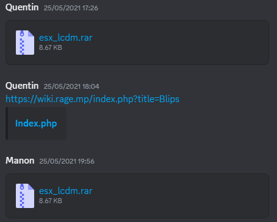
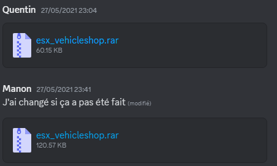
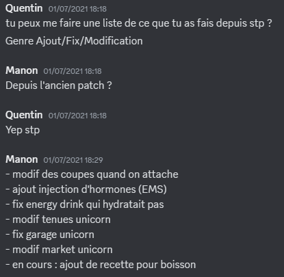

Projet FiveM
Projet Personnel : Développement sur un serveur FiveM (GTA RP)
En 2021, avant même d’entamer ma formation en BUT Informatique, j’ai découvert le développement via un serveur GTA RP hébergé sur la plateforme FiveM. Ce projet personnel a été un véritable point de départ dans mon parcours, m’ayant donné goût à la programmation et motivé à poursuivre dans cette voie.
Contexte et Découverte
Tout a commencé par des échanges avec le développeur principal du serveur. Curieuse mais sans expérience, j’ai progressivement intégré l’équipe technique en réalisant des modifications simples sur des fichiers Lua. J’ai ainsi appris les bases du langage en autodidacte, en testant des fonctionnalités côté client et côté serveur.


Le développeur m'envoie les fichiers à modifier
Contributions techniques
Au fil des semaines, mon rôle a évolué :
- Programmation en Lua : corrections de bugs, ajouts de fonctionnalités.
- Connexion à la base de données : utilisation de phpMyAdmin pour lire et manipuler les données liées aux utilisateurs, véhicules, inventaires, etc.
-
Déploiement contrôlé :
- Utilisation d’un serveur de test pour valider chaque ajout.
- Connexion via PuTTY pour gérer le serveur à distance et redémarrer des services.
- Rédaction de patch notes après chaque mise à jour.
Exemple de code et de table de base de données que j'ai pu faire pour ce projet

Mise en commun des modifications pour le patch note
Autres contributions
- Intégration de ressources : ajouts de scripts, mappings et mods issus de bibliothèques communautaires.
- Mapping personnalisé : modifications visuelles et structurales du jeu via CodeWalker, permettant d’enrichir le serveur avec des zones inédites.
Organisation du travail
Bien que notre méthode n’était pas formalisée, nous avions des bonnes pratiques collaboratives :
- Communication sur les fichiers en cours de modification.
- Tests rigoureux avant déploiement.
- Documentation des changements.
Ce projet a été un véritable déclencheur pour moi. J’y ai découvert l’univers du développement applicatif, la logique des scripts, les interactions avec une base de données et la rigueur nécessaire pour maintenir un service en ligne fonctionnel. Ce sont ces premiers pas autonomes qui m’ont donné envie de me lancer dans des études en informatique. Aujourd’hui encore, je mesure combien cette expérience a été fondatrice dans ma capacité à apprendre en autonomie, résoudre des problèmes concrets, et collaborer sur un projet technique.
Compétences Mobilisées (Hors cursus, mis en lien avec le BUT)
Même si ce projet a été réalisé en dehors du cadre académique, il m’a permis de mobiliser ou d’anticiper certaines compétences du BUT Informatique :
Compétence 1 : Réaliser un développement d'application
Création de scripts Lua fonctionnels (ajouts de fonctionnalités, corrections) pour un environnement client-serveur.
Compétence 4 : Gérer des données de l'information
Manipulation d’une base de données via phpMyAdmin pour tester ou corriger des comportements liés à l’état des joueurs ou des objets du jeu.
Compétence 5 : Conduire un projet
Déploiement progressif avec serveur de test, notes de mise à jour, gestion manuelle des conflits.
Compétences utilisées
- Langages:
- LUA
- Autres compétences :
- PHPMyAdmin
- WinSCP
Informations du projet
- Categorie Programmation jeu video, Programmation serveur
- Période du projet Mai 2021 à Octobre 2021